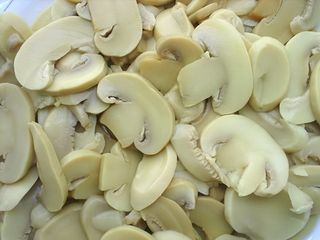
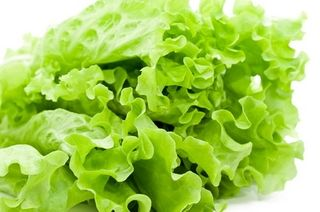
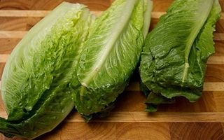
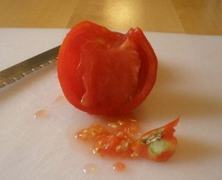
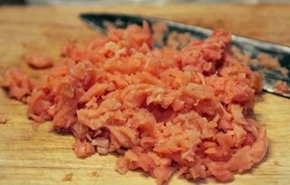

Шаг 1: Шинкуем грибы.

Баночку с грибами откройте, слейте с них весь маринад, выложите на разделочную доску и мелко нашинкуйте. Измельченные грибы сложите в сервировочную салатницу.
Шаг 2: Рвем салат.

Смесь салатов и помидоры хорошенечко промойте под холодной проточной водой. Затем осушите при помощи кухонного полотенца.

Измельчите на разделочной доске, либо порвите их руками прямо в салатницу небольшими лохмотьями.
Шаг 3: Добавляем томаты и рыбу.

Помидорки сначала разрежьте на половинки, удалите плодоножки, потом также измельчите и отправьте в салатницу к остальным ингредиентам.

Рыбу также мелко порежьте и отправьте в салатницу.